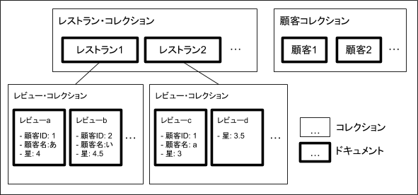
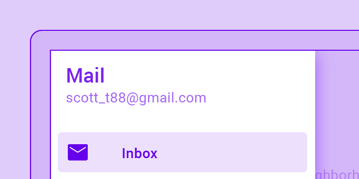
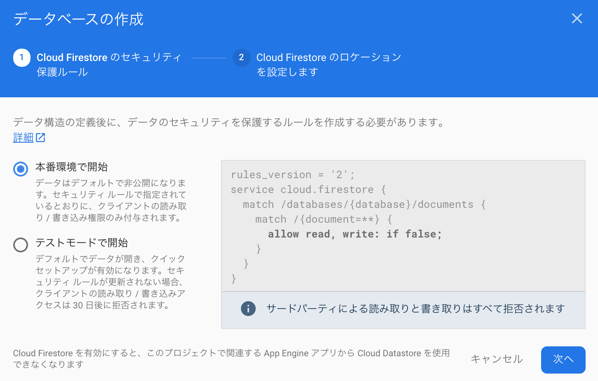
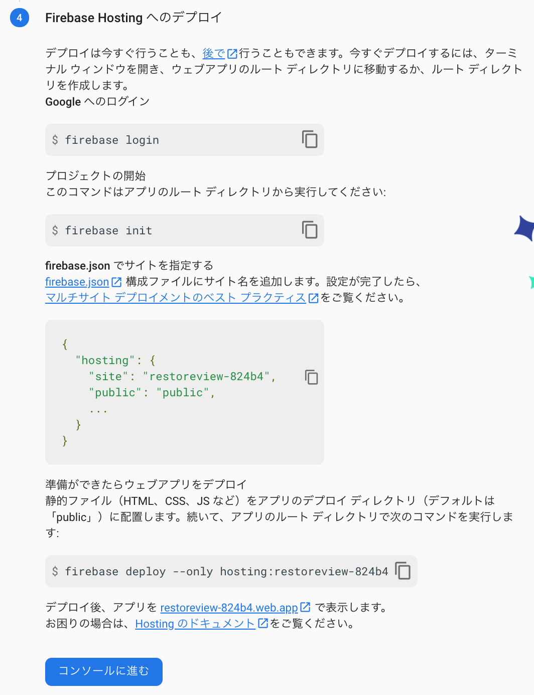

本書の内容
本書では、データモデル設計とNoSQLデータベースとFirestoreについて学んだのち、レストランにレビューを追加するアプリを例にFirebaseとFlutterを使ったスマホアプリ開発する一連の流れをハンズオンします。
本書のコンセプト
最近はコロナの影響もあり、在宅勤務が推奨され、学校の授業がオンライン化され、買い物はeコマースの利用が増加し、食事の際は出前アプリを使った配達が流行っています。コロナ以前も社会へのオンライン化の必要性が謳われていましたが、コロナ渦ではあらゆる生活シーンでオンライン利用が半強制化されているため、スマホやパソコンの所有率やITリテラシーは向上せざるを得ず、ますます使いやすいオンラインサービスに対する需要が増しています。
最近のシステム開発の動きを見ると、いままで使いづらいサービスの代名詞であった行政や金融のオンラインサービスをユーザ中心設計を採用し、使いやすくセキュリティ上も安全なサービスに作り替えようとする取組が進められています。またIT化が比較的遅れていた中小企業においてもDX（デジタルトランスフォーメーション）を促進しようとする動きがあります。
あらゆる業界・組織において、あらゆる生活シーンでそれぞれの要件にあった使いやすいオンラインサービスが安価に構築・提供されることが求められています。
一方これらの要望を担う人材育成の観点では、子供から大人までプログラミング教育がはやっており、文科省は小学校でのプログラミング授業を必須化しています。
ただし、システム開発や人材育成において下記のような課題があると感じています。
- アプリ開発の要件定義や設計フェーズにおいて画面設計に走りがちで、データ構造やロジックの設計がおろそかになり、プログラマーが開発をはじめらずプロジェクトが遅延するといった状況に陥りがちです。20年近くIT企業でアプリ開発を実施してきましたが、昔も今もこのようなプロジェクトをいくつか見ています。
- この原因としては、システムデザインについての手法（ドメイン駆動設計やシステムアーキテクチャなど）やその説明が高尚で難しいという問題があります。そのため、本来必要なシステムデザインがスルーされ、スケジュールのプレッシャーもあり、とりあえず簡易な画面設計に走ることにつながるのではと感じています。
- 昨今のユーザ中心設計の誤った解釈から、システムの顧客接点である画面のデザインがフォーカスされ、発注側の要件定義担当者やデザイナーを含めたプロジェクトメンバーが、本来画面設計の元になるはずのデータモデリングについて理解が乏しいことに原因があるのではとも感じています。
- 例えば、業務で扱うデータが整理できておらず各業務ステップで担当者が手動で作業をしているため、残業が減らないのでシステム化で改善したい、といった要望がありました。ここではアーキテクト不在で要件定義が進められ、プロジェクトマネージャやデザイナが画面設計に走り、プロジェクトの半年後はじめからやりなおしになりました。システム化とは業務とデータの整理整頓でありデータモデリングがはじめから必要であることを意識しておくべきです。
- エンジニア育成という観点からは、従来のプログラミングの学習コンテンツはプログラミング言語の文法を学ぶことが目標となっており、出来上がったプログラムが端末に"Hello World"と表示するといった面白みにかけ作りたいものからかけ離れた学習内容になっていることが多いです。そのため初心者の時点からやる気をなくしてしまいます。
- 最近の子供向けプログラミング授業用ソフトは使いやすい見た目がよく、マウス操作でプログラミングの論理的思考が学べるといったすぐれた面がある一方、汎用的なアプリケーションを開発するため使えないといった欠点も見受けられます。
以上のことから、エンジニアだけでなく発注側顧客企業の担当者やプロジェクトマネージャもユースケースからデータモデルに落とす考え方やデータモデルから画面設計を行うための考え方、さらにはこれらのパターンを知っていることが望まれます。
そこで本書ではデータモデリングの具体的な方法と考え方についても詳しく説明するよう心がけました。またエンジニア育成という観点では、アイデアが浮かんだらすぐに完成品までもっていけるよう効率的で汎用的なツールを選び、それらのハンズオンを掲載しています。具体的な選定理由は以下の通りです。
- 開発対象のアプリは昨今の利用シーンを考えスマホアプリを対象としました
- サーバ構築には、スマホアプリに一般的に必要となるサーバ機能をボタン一つで提供するGoogle Cloud Firebaseを採用しました
- 認証のしくみには、スマホアプリに即組み込めて、様々なタイプの認証機能を提供し、外部のOIDCサーバとも連携できるFirebase Authを採用しました
- データベースには、リアルタイムデータベースとスマホアプリから安全に直接アクセスできるSDKが提供されているFirestoreを採用しました。本来ならデータベース構築以外にもアプリをデータベースにつなげるためのAPI開発やセキュリティ対策も必要になりますが、Firestoreの採用によりこれらの工数が劇的に削減されます。
- スマホアプリ開発には、一つのプログラミングコードでiPhoneアプリもAndroidアプリもWebアプリも構築できるクロスプラットフォームの一つであるFlutterを採用しました。本来ならiPhoneアプリ、Androidアプリ、Webアプリそれぞれについて、異なる開発環境、プログラミング言語、開発フレームワークを使った開発が必要ですが、これらを一つの環境で同一のプログラミング言語で一回コーディングすることで可能にしています。これにより開発工数が大幅に削減されます。
様々な立場の人が本書を読みハンズオンを試してもらうことで「こんなに簡単に作れるんだ」とものづくりに興味をもってもらい、自分たちが実現したいシステムを自らが構築するマインドをもっていただく一助になればと思っています。また、本書をとおしてツールとしてのIT技術の活用の幅や裾野や人材が広がり民主化されることで、自らの会社や組織、業界においてより価値を産むサービスのアイデア考察とそれを実現する組織の構造やマインドを含んだ改革の実現により多くの時間を専念できるようなればと願っています。
※ 著者は2020年2月に第33回「21世紀交流サロン・葵丘」にてこれらの考え方を「テクノロジーの民主化」と題して話しました。http://21cmikawa.jp/activity/activity.php
本書で学ぶこと
- ユースケースからのデータモデリング方法
- データモデルからの画面設計方法
- ユースケース、データモデル、画面設計のパターン
- NoSQLデータベースとCloud Firestoreの概要
- Firebase AuthとFirestore、Cloud Functionsの使い方
- Flutterを使ったアプリの開発
データモデルの設計はユースケースからデータモデル候補を抜き出すことからはじめます。これによってデータの大きな単位とそこに含まれるフィールドを整理できます。また、ここで抽出されたデータ単位ごとにテーブルを作り、具体的なデータサンプルを作っておくと次ステップのデータ間の関係を考察する際に役立ちます。
データ候補が抽出できたら、まとめたデータサンプルを参照しながらそれらの関係を整理します。本書ではドキュメント型データベースを採用するため、ドキュメントとコレクションの関係を整理します（ドキュメント型データベースについては、「NoSQLとFirestoreについて」を参考にしてください）。前ステップで行ったデータ候補の抽出は比較的簡単な作業ですが、ここで行うデータ間の関係整理は経験が必要な難しい作業です。前ページ「はじめに」で挙げた課題である画面設計に走りがちな理由もこの難しさにあるものと考えられます。次ページ「ユースケース、データモデルと画面設計のパターン」では、よくあるユースケースとデータモデルと画面設計のパターンをまとめていますので、興味がある方はそちらを参照ください。
コレクションとドキュメントの分離方針がきまったら、サンプルデータをJSONの形式にまとめます。JSONスキーマにそった正しいJSON形式にまとめることでドキュメント型データベースで扱えるサンプルデータが作成されます。JSONとはWebアプリケーションやREST APIで扱われるプログラムが処理しやすく人も見やすいデータ形式ですが、初めてJSONを扱う人は正しいJSON形式とは何かわからないと思います。そのため本書では本文中にJSONエディタというツールを組み込んでJSONデータを表示し、JSON形式でのサンプルデータの作り方をステップバイステップで解説します。
1. ユースケースからデータの候補を抽出する
顧客がレストランに対して星の数とコメントでレビューを記入し公開するアプリを例にしたユースケース記述を以下にまとめます。
- 顧客はアプリにログインする
- レストランのリストが表示され、料理の種類や住所、星の数の平均で検索する
- レストランのリストから一つを選ぶとレストランの詳細が表示する
- レストランのリストから一つを選ぶとレストランの詳細が表示する
- レストランの詳細には店名、料理の種類、住所、星の数の平均のほか、そのレストランに対するレビューがリスト表示され、星の数やコメントの内容でソートや検索をする
- レストランの詳細ではそのレストランのレビューがリストされ、登録ができる
- レビューでは星の数とコメントが登録でき、登録更新時にレストランの星の数の平均が更新される
- 顧客自身が登録したレビューについては編集と削除ができる
このユースケース記述から得られるデータ候補を「ドキュメント（フィールド1、フィールド2、‥）」と表現すると下記のように整理できます。
- レストラン（店名、料理の種類、住所、星の数の平均）
- レビュー（レビューした顧客名、星の数、コメント）
- 顧客（メールアドレス、氏名、アイコン）
ここで具体的なサンプルデータを表形式にまとめておくとイメージしやすくなり今後の設計もしやすくなり、開発メンバーへの説明もしやすく開発やテスト等にも生かせます。
表1. レストラン
ID | 店名 | 種類 | 住所 | 星数 | ロゴ |
0 | ガスト東岡崎店 | 洋食 | 愛知県岡崎市大西１丁目１−１０ | 0 | https://www.skylark.co.jp/site_resource/gusto/images/logo.svg |
1 | デニーズ東岡崎店 | 洋食 | 愛知県岡崎市美合町 字五反田２５－１ | 0 | https://sozainavi.com/wp-content/uploads/2019/10/dennys.jpg |
2 | 大戸屋ごはん処岡崎店 | 和食 | 愛知県岡崎市井田西町１−１１ | 0 | https://sozainavi.com/wp-content/uploads/2019/10/ootoya.jpg |
3 | 和食さと岡崎店 | 和食 | 愛知県岡崎市上里２丁目１−１ | 0 | https://sato-res.com/assets/tile/sato.png |
4 | カレーハウスCoCo壱番屋岡崎上地店 | カレー | 愛知県岡崎市上地３丁目５１−６ | 0 | https://www.ichibanya.co.jp/assets/images/common/ogp.png |
5 | スシロー岡崎上和田店 | 寿司 | 愛知県岡崎市天白町東池１５−１ | 0 | https://www.akindo-sushiro.co.jp/shared/images/ogp.png |
6 | くら寿司北岡崎店 | 寿司 | 愛知県岡崎市錦町２−１２ | 0 | https://www.watch.impress.co.jp/img/ipw/docs/1230/499/kura1_s.jpg |
7 | モスバーガー岡崎大西店 | ハンバーガ | 愛知県岡崎市大西１丁目１６−７ | 0 | http://www.wing-net.ne.jp/image/kamiooka/store/storage/w250/mos.png |
8 | マクドナルド岡崎インター店 | ハンバーガ | 愛知県岡崎市大平町石丸６０−１ | 0 | https://sozainavi.com/wp-content/uploads/2019/10/mcdonalds.png |
9 | かつや愛知岡崎インター店 | とんかつ | 愛知県岡崎市大平町新寺25 | 0 | https://www.arclandservice.co.jp/katsuya/wp-content/themes/arclandservice-group/assets/img/katsuya/common/logo.svg |
表2. レビュー
レストラン「ガスト東岡崎店」に対するレビュー
ID | 顧客名 | 星数 | コメント |
0 | 鈴木一郎 | 2 | 値段の割に合わない気がする。 チーズハンバーグを頼んだが、レトルトな感じでした。 さらに、スープセットにしたが、スープは一種類。 |
1 | 佐藤二郎 | 3 | タブレットによる注文に変わったが、慣れが必要。 メニューを広げて、料理を比べたい。 この方式で価格が下がればよいが、，， |
2 | 北島三郎 | 5 | ドリンクバーが99円(単品で注文してもOK)。 パソコンの持ち込みOK。 コンセントで充電できる。持ち帰り容器は無料。 食べきれない料理の持ち帰りOK。 トイレは新しくてキレイ |
表3. 顧客
ID | メールアドレス | 氏名 | アイコン |
0 | ichiro@test.com | 鈴木一郎 | https://meikyu-kai.org/wp-content/uploads/2020/01/51_Ichiro.jpg |
1 | jiro@test.com | 佐藤二郎 | http://www.from1-pro.jp/images/t_10/img_l.jpg?1597426029 |
2 | saburo@test.com | 北島三郎 | https://cdn.asagei.com/asagei/uploads/2016/08/20160810kitajima.jpg |
2. データをドキュメントとコレクションのツリー構造にする
1で抽出したデータをドキュメントとコレクションの関係についての方針を整理します。
- レストランドキュメントと顧客ドキュメントはルートレベルコレクションに納める
- レビュードキュメントはレストラン・ドキュメントのサブコレクションに納める
- レビュードキュメントに顧客フィールドの一部をマップとして納める
これらの関係を表現したツリー構造を下図に示します。

3. サンプルデータをJSON形式で表現する
ドキュメントとコレクションの関係について方針が決まったら、1のサンプルデータをJSON形式であらわすことでより具体化します。
ここではJSONエディタを使い、段階的にサンプルのJSONデータを作成します。
3-1. レストラン・ドキュメントの作成
上記表1のIDが0のレコードを参考にレストラン・ドキュメントを作成します。
JSONではデータのひとつの塊であるドキュメントを { } で囲み、その中に "属性名": "属性値" をカンマ（ , ）で区切ってリストします。
3-2. レストラン・コレクションの作成
上記表1の通りレストランは10個存在するため、配列をあらわすコレクションとして表現します。
JSONではこのコレクションを { "配列名": [(ドキュメントをカンマ( , )で区切ってリスト)] } で表現します。
3-3. 顧客コレクションの追加
レストランと同じく顧客コレクションもルートレベルに追加します。
JSONでは二つのコレクションを { "users": [(...)], "restaurants": [(...)] } と表現します。
3-4. レビュー・ドキュメントをレストラン・ドキュメント配下のサブコレクションとして追加
レビュー・ドキュメントの配列であるコレクションをレストラン・ドキュメント配下に追加します。この時、レビュー・ドキュメントには書き込みを行った顧客がわかるように顧客IDを追加します。一方、レビュー・ドキュメントはレストラン・ドキュメント配下のサブコレクションに含まれ、レストランとレビューの関係が表現されているので、レビュー・ドキュメントにレストランIDは必要ありません。また、レビュー・ドキュメントを参照するだけで書き込みを行った顧客名とレビュー対象のレストラン名がわかるよう、それらの項目も追加します。以上の作業の必要性については「NoSQLとFirestoreについて」を参照してください。
TODO データモデルができあがったら画面設計を行いますが、下記の内容を紹介します
- 画面設計は、画面と画面遷移からなる。
- 画面の構築にはマテリアルデザインを利用する。
- 世の中の主要なアプリは下記の機能の組み合わせからなりたっている。
- ユーザ登録、ユーザ削除、ログイン、ログアウト、
- 複数データの整理整頓（リスト画面と詳細画面からなる）
- フォームとウィザード（申請、アンケート、テストのイメージ）
- スケジュールとカレンダー
- 地図
- チャット
- 決済・ポイント処理
- イラスト、写真加工
- OCR、物体認識
- など
- ゲームやAR、スマートスピーカといった特殊なUIのアプリ以外は、複雑なアプリでもこれらの組み合わせ。
- 画面遷移のパターンは、単一機能内では状態遷移とウィザード、機能を切り替えるメニューがある。
- 複数データの整理整頓の機能は、状態遷移パターンで表現でき、リストやグリッド形式でコレクションを表示する画面とリストやグリッドから一つを選ぶと選択されたドキュメントの詳細を表示する画面、新規ドキュメントを登録する画面と既存ドキュメントを編集する画面、リストやグリッドから選択したドキュメントを削除する操作からなりたつ。
- ウィザードパターンは多くのデータを順番に入力していく場合に利用。ウィザードは前後一本線で画面がつらなるのが一般的ですが、枝の分岐が入ると複雑になるので極力そのような実装はさけて、どうしても必要な場合は例外処理をつかうと見通しがよくなる。
- メニューパターンは機能の切替であり、ナビゲーションバーとページビューを使って実装する。
世にあるアプリのユースケースをいくつか例に挙げ、それらのデータモデルと画面設計のパターンを紹介します。これらを理解し参考にすることで、経験の少ない方でもみずからのユースケースから適切な設計を行うことが可能になるでしょう。
1. メモアプリ
TODO
1-1. ユースケース
TODO
1-2. データモデル
TODO
1-3. 画面設計
TODO
2. 学生名簿
TODO
2-1. ユースケース
TODO
2-2. データモデル
TODO
2-3. 画面設計
TODO
3. 観光地紹介
TODO
3-1. ユースケース
TODO
3-2. データモデル
TODO
3-3. 画面設計
TODO
4. カレンダー
TODO
4-1. ユースケース
TODO
4-2. データモデル
TODO
4-3. 画面設計
TODO
5. 会議室予約
TODO
5-1. ユースケース
TODO
5-2. データモデル
TODO
5-3. 画面設計
TODO
6. 商品購入
TODO
6-1. ユースケース
TODO
6-2. データモデル
TODO
6-3. 画面設計
TODO
7. 出前
TODO
7-1. ユースケース
TODO
7-2. データモデル
TODO
7-3. 画面設計
TODO
8. ホテル予約
TODO
8-1. ユースケース
TODO
8-2. データモデル
TODO
8-3. 画面設計
TODO
9. 高速バス予約
TODO
9-1. ユースケース
TODO
9-2. データモデル
TODO
9-3. 画面設計
TODO
10. 営業支援
TODO
10-1. ユースケース
TODO
10-2. データモデル
TODO
10-3. 画面設計
TODO
11. 保険契約管理
TODO
11-1. ユースケース
TODO
11-2. データモデル
TODO
11-3. 画面設計
TODO
12. 物品管理
TODO
12-1. ユースケース
TODO
12-2. データモデル
TODO
12-3. 画面設計
TODO
13. ホームページ管理
TODO
13-1. ユースケース
TODO
13-2. データモデル
TODO
13-3. 画面設計
TODO
14. 出張申請・精算
TODO
14-1. ユースケース
TODO
14-2. データモデル
TODO
14-3. 画面設計
TODO
15. アンケート
TODO
15-1. ユースケース
TODO
15-2. データモデル
TODO
15-3. 画面設計
TODO
15. 講義・授業管理
TODO
15-1. ユースケース
TODO
15-2. データモデル
TODO
15-3. 画面設計
TODO
16. テスト・試験
TODO
16-1. ユースケース
TODO
16-2. データモデル
TODO
16-3. 画面設計
TODO
17. グループチャット
TODO
17-1. ユースケース
TODO
17-2. データモデル
TODO
17-3. 画面設計
TODO
18. Web会議
TODO
18-1. ユースケース
TODO
18-2. データモデル
TODO
18-3. 画面設計
TODO
19. 恋人マッチング
TODO
19-1. ユースケース
TODO
19-2. データモデル
TODO
19-3. 画面設計
TODO
20. キャッシュレス決済
TODO
20-1. ユースケース
TODO
20-2. データモデル
TODO
20-3. 画面設計
TODO
21. ポイント管理
TODO
21-1. ユースケース
TODO
21-2. データモデル
TODO
21-3. 画面設計
TODO
22. 画像認識レジ
TODO
22-1. ユースケース
TODO
22-2. データモデル
TODO
22-3. 画面設計
TODO
23. 名刺OCR
TODO
23-1. ユースケース
TODO
23-2. データモデル
TODO
23-3. 画面設計
TODO
ここでは画面設計に関連して、Googleが2014年に発表したUIデザインのガイドラインであるマテリアルデザインを紹介します。特にスマートフォンのアプリケーションのUIデザインにフォーカスし、スマホアプリ特有の問題からデザインの歴史の説明をへながらマテリアルデザインが出現してきた背景やその業界におけるインパクトについて説明します。
1. スマートフォンの特徴
スマートフォンはパソコンと違い下記の特徴が挙げられます。
画面が小さく操作手段が限定的
スマホにはマウスやキーボードがなく操作手段が限られるため、画面レイアウトや操作性をどのようにデザインするかでユーザの満足度が大きく変化します。
画面サイズがばらばら
AndroidとiPhoneというOSの違いだけでなく、画面サイズもさまざまであり、アプリのレイアウト幅や高さを固定すると画面表示が崩れて使い物にならなくなります。例えば、歴代のiPhoneを比べても下図のとおり様々な画面サイズが存在しますし、Androidは各デバイス開発会社が様々なものを出しているのでiPhone以上に画面サイズはバラバラです。
2. スマホアプリで発生しやすい問題点
スマホアプリに対する悪評をGoogle PlayやApp Storeに登録されたアプリの評判から4つにまとめると以下のとおりになります。
- 操作途中でクラッシュしてしまう
- 元の画面に戻れない、探している機能に行き着かない、といったナビゲーション機能が不十分
- デザインが必要以上に凝っていて意味不明
- 大量の情報がそのまま表示され、検索したりフィルタリングする機能がない
これらの悪評のうち、2から4まではUIデザインの問題です。
3. スマホデザインの歴史
それではスマホにおけるデザインはどのような歴史を歩んできたのでしょうか。
まず、2000年前半のWebやアプリケーションのUIはそれまでのWindowsパソコンが機械的で使いづらく利用者のことを考えて作られていないという反省から、コテコテに現実世界を模して装飾したコンポーネントからなるUIを取り入れるようになりました。この考え方によるデザインをスキューモーフィズムと呼びます。ただし、この装飾に凝ったデザインでは、デザイナーの主張が先行し見た目や操作性に統一感がないといった弊害を生むことになりました。
そのため、20世紀初頭のモダニズムが建築や工業製品のデザインに取り入れられたように、パソコンやWebやモバイルのデザインにも極力装飾を廃したフラットデザインが採用されることになりました。ただし、フラットデザインはシンプルすぎて、システムの構造やしくみが理解しづらいといったデメリットが挙げられます。
iPhone6のスキューモフィズムデザイン
| iPhone7のフラットデザイン |

そこで、Googleはフラットデザインとスキューモフィズムの中間をとり「マテリアルデザイン」というものを定義し、2014年にだれでもオープンソースガイドラインとして発表しました。
4. マテリアルデザインとは？
マテリアルデザインとは、Googleが2014年に発表したUIのデザインガイドラインです。Googleは、Gmailなどの数多くのアプリを発表してきましたが、それらがパソコン、Android、iPhone、タブレットなど異なるデバイスで利用されるとき、画面サイズもOSも異なるため、異なった見た目と操作性を持ってしまったことを問題視していました。そのため、さまざまなデバイスでもデバイスの特徴を踏まえながら統一したデザインで操作できるようなUIデザインのガイドラインを作ろうということで開発されたのがマテリアルデザインです。例えば、スマホのようなデバイスでは、手のひらで操作することを想定して、直感的で意味のある物理的な概念をデザインに取り入れてガイドラインが策定されています。
マテリアルデザインは、あくまでもガイドラインなので、必ず準拠すべきものではありませんが、デザインの部品がどのような形でどのように動くかが細かく規定されており、Java、Kotlin、Swift、JavaScript、Flutterといったさまざまな言語に対応した無料で利用できるプログラムとともに提供されているので、まるまる採用することで一定基準以上のUIデザインを実現したアプリを開発するための設計や実装の工数を大幅に削減できるといったメリットがあるものです。そのため、多くのプロジェクトで広く採用されています。
5. マテリアルデザインの4つの考え方
マテリアルデザインは以下の4つのコンセプトを持ちます。
①形をもった面
形をもったうすい紙のような面が重なって画面を表示するしくみを採用しています。この考え方によって、一枚の紙を切って分割して記事を表示したり、メニューやフッターを表示するための紙と中心のコンテンツをのせるための紙が重なって表示されることを影を使って表現することができます。これによって実際は奥行きがなくフラットなスマホの画面を立体的に表現することによって、表示されているものの種類が区別しやすくなったり、高さを使うことで手前にあるものほど重要といったユーザが3次元の世界で感じるのと同じようにどこに注意をむけるべきかを直感的に知ることができるようになります。
②印刷物のようなデザイン
文字や絵が紙に載っているという概念からなり、ベースラインやキーラインといった印刷物のコンセプトを踏襲しています。ベースラインを決めることでコンテンツが収まる範囲を決めたり、本文やタイトルなどはキーラインを基準に配置するなど、印刷用にワードなどに設定する値を応用することで見た目に統一感を持たせて画面を美しくみせることができるようになります。また、見やすいフォントを提供しています。
③意味のあるアニメーション
ユーザになんらかの意味を伝えるためにはアニメーションが効果的な場合がありますが、コンポーネントにアニメーション表示を簡単にほどこせるようなしくみを実装しています。
④アダプティブデザイン
パソコン、Androidスマホ、iPhone、タブレットなどデバイスが異なっていても画面サイズが異なっていても形を崩さず表示するしくみを実装しています。レスポンシブデザインも同じコンセプトですが、アダプティブデザインは横幅の伸び縮みだけでなく、メニューの表示非表示などよりアダプティブにデザインを変化させるしくみをそなえています。
6. Flutterにおけるマテリアルデザイン
マテリアルデザインを使うと下記のようなリッチなUI画面を実装することができます。下の例はFlutterを使って実装したUI画面のサンプルギャラリーです。
Flutterにおけるマテリアルデザインは下記のような部品を提供しています。詳細はこちらを参照してください。
|
 | ||
|
|

7. カラーテーマ
マテリアルデザインはアプリのブランディングを統一的に進めるためにカラーテーマという概念を採用し、アプリケーション全体で部品の色やフォントカラーを統一させることが可能です。逆に言うと、同じアプリでもカラーテーマを変えてイメージの異なるアプリとして仕上げることも可能です。
カラーテーマの話
https://material.io/design/color/the-color-system.html
カラーツール
https://material.io/resources/color/
8. マテリアルデザインの発展
マテリアルデザインは単なる画面と画面遷移にとどまらず、音声や機械学習に関するUIについても拡張し、ガイドラインを提供しています。
機械学習機能に関するマテリアルデザイン
https://material.io/design/machine-learning/understanding-ml-patterns.html
音声に関するマテリアルデザイン
本書では開発環境にFlutter、インフラ環境にFirebaseを選定している根拠を記載します。
1. Flutterの選択根拠
昨今スマホアプリ開発には二つの選択肢があると言われており「あらゆるデバイス向けにネイティブアプリを開発しメンテナンスをする」か「特定のクロスプラットフォームフレームワークを選択して一つのコードをメンテナンスする」かを選択する必要がありました。
「あらゆるデバイス向けにネイティブアプリを開発しメンテナンスをする」は現在80%の企業が選択しており、ネイティブアプリ開発により得られる操作性のよさと引き換えに、iPhoneとAndroid用に2つのソースコードで開発し、両方の卓越したプログラマーを雇い、コストをかけて運用しています。一方「特定のクロスプラットフォームフレームワークを選択して一つのコードをメンテナンスする」を選択した場合、開発されるアプリケーションはネイティブアプリより操作性や機能は劣りますが、両方をネイティブ開発するより半分程度のコストですむことになります。
参考）Why choose Flutter for your company?
しかし、Flutterは第三の選択肢として機能します。FlutterはDart言語でプログラミングすると完全にネイティブなiOS用コードとAndroid用コードを生成してくれます。さらにはこれをリアルタイムで行うため、開発したスマホアプリを動かしながらDart言語によるソースコードを修正し、画面を修正することができます（これをホットリロードといいます）。このようにFlutterを使うことで、ワンコードで同じUIのiPhoneとAndroid両方のネイティブアプリを開発することが可能になります。
Flutterを選択することで得られるビジネス上のメリットを以下に示します。
- アプリ投入までの時間短縮：Flutterはワンコードでネイティブアプリを開発できるのはもちろん、マテリアルデザインをサポートしており画面実装に必要な部品を標準で利用することができることやインターネット経由でのAPI操作に適した非同期処理を直感的に操作しやすいDart言語の特徴により開発スピードを早めることができます。
- 高品質のルックアンドフィール：Flutterはピクセルレベルのデザインを可能にしており、リッチなマテリアルデザインベースの部品やアニメーションのしくみを有しているので、デザイナーはアプリケーションのブランディングを優先し、フレームワークの制約を考慮することなくデザインすることができます。
- 手ごろなコスト：Flutterはオープンソースでコミュニティベースで開発されているため、ツール採用のために必要なコストはありません。また、Java開発者のようなオブジェクト指向言語経験者ならDart言語の学習曲線はそれほど高くなく、エンジニア育成コストもそれほど高くないと思われます。
- リーチとリテンション：リッチなデザインの操作性のよいネイティブアプリをiPhoneとAndroid向けに同時にリリースできるため、世の中のすべてのユーザにリーチできます。また使い勝手がよいアプリの提供によりユーザのリテンション（維持・保持）率もアップします。
なお、Flutterと比較されるクロスプラットフォーム開発環境と特徴を以下に紹介します。
- Cordova: HTML5とCSS、JavaScriptを使ってiPhoneとAndroid共通のUI部分を実装し、プラットフォーム依存の部分をプラットフォームにあわせてプラグインとして開発することでクロスプラットフォームを実現します。そのため、操作性や機能に制限があり、ネイティブな機能を使う場合には両プラットフォーム用にプラグイン開発が発生します。
- ReactNative: Facebookが開発したクロスプラットフォーム開発環境で、JavaScriptで開発をします。一つのコードからiPhoneとAndroid用のネイティブコードを生成しますが、生成に時間が発生し、ホットリロードができません。
- Xamarin: マイクロソフトが開発するクロスプラットフォーム開発環境で、C#で開発をします。Flutterと同じくネイティブコードを生成し、最近ホットリロードにも対応していますが、描画スピードに乏しいのが欠点です。またコミュニティサポートが不十分であるため、Flutterほど情報があり、人気があるとはいえません。
2. Firebaseの選択根拠
本書で開発するレストランレビューアプリもそうですが、世の中のスマホアプリはインターネット上のサーバと連携してサービスを提供します。通常、インターネット上のサーバはアプリで入力したデータを保存したり、アプリに表示するデータを提供するデータベースが主要な機能ですが、スマホアプリからはODBCやJDBCのようなしくみでデータベースにアクセスするのはセキュリティ上の理由からも推奨されません。そのため、アプリからのアクセスの際、テーブルのJOINも含めてCRUDのどの機能が必要かを考えて、APIを開発して、認証認可のしくみを実装することが必要になります。
一方、Firebaseは、アプリにログインする認証のしくみ（Firebase Auth）とアプリと安全にコネクションを繋いだままストリーム処理が可能なデータベース（Firestore）、写真などの大きめのバイナリファイルを保存するためのストレージ（Firestorage）といったサービスを提供しており、Firebase Authで認証されたユーザIDと紐づけてFirestoreデータベースにデータを保存したり、FirestorageのURIをFirestoreデータベースに保存して利用するしくみを標準的なSDKが提供しています。
そのため、一からバックエンドのサービスを開発するのに比べ、基本的な機能をほとんど開発する必要がないため、開発工数を劇的に削減することができます。
さらには、Firebaseはモバイルアプリ用に必要とされるA/Bテストの機能やスマホアプリのクラッシュログを収集する機能、ユーザがどの画面のどのボタンをクリックしたかといった導線確認の機能、スマホアプリをテストユーザに配布する機能など豊富な機能を安価に提供しているため、多くのモバイルアプリ開発者が採用しています。
以上の理由から本書ではバックエンドの機能をFirebaseで実装することにしました。
3. ベンダーロックインの排除
企業におけるITツールの選定で気をつけるべき点にベンダーロックインの排除が挙げられます。というのも、採用技術の開発が止まったり急に利用コストが値上げされ別の方法を模索しなければならなくなったり、アプリを他社に提供する場合に先方のプラットフォームにあわせられるか、といったことがありうるため、採用時のメリデメだけでなく他に乗り換えられる可能性も考慮しなければなりません。
まず開発環境としてのFlutterについてですが、100%オープンソースであり、プロジェクトがストップしたりいきなり有料サービスになることは、いまとなってはまずあり得ないため、Flutterを採用することによるベンダーロックインはありえないと考えてよいでしょう。
一方、Firebaseについてはアプリの横展開をする際にクラウドサービスを使いたくないケースが考えられるので、なんらかの代替案を考える必要があります。Firebaseのサービスごとに代替案を以下に紹介します。
Firebase Auth: 独自に認証サーバを立ち上げたり、Keycloakのような統合認証認可サービスを立ち上げてユーザ管理をすることで代替できます。
Cloud Firestore: ドキュメント型データベースとしてmongoDBがあげられるので、ストリーム型でアプリから連携できるようgRPCで公開し、Dart言語のgRPCクライアントを開発しFlutterで利用することで実現できる。認証のしくみはgRPCサーバ側でKeycloakのクライアントプラグインを使って実装することで実現できる。ただし、Firestoreで実現しているセキュリティルールやオフライン機能や差分のみをやりとりする機能などの高度な機能の実装は困難なので、アプリの使い勝手は悪くなると思われます。
Firebase Storage: Keycloakのような認証サービスと連携してストレージサービスを開発するのは難しいので、データベースにサイズを小さくしたバイナリとして保存するようにするとよいかもしれない。
Googleが公開している12コマの動画シリーズをベースにNoSQLデータベースとFirestoreを解説します。
動画の全体像
ここで紹介する動画シリーズは、GoogleのTodd Kerpelman氏による「Get to know Cloud Firestore」という動画シリーズで、Firestoreを使い始めるにあたって知っておくべきことを12回にわたって解説しているものです。本書に添付された動画は全画面表示が可能ですし、英語の字幕を自動表示する設定になっていますが、英語が苦手な人はYoutube画面の右下の設定で字幕をONにし、さらに字幕の自動翻訳を選び日本語を選択して日本語字幕を表示することも可能です。
1. NoSQLの特徴
- 従来型のリレーショナルデータベースではテーブルのスキーマが厳格に定義され、正規化という手法でデータの重複が発生しないようテーブル分割します。分割されたテーブルが互いに関係を持つ場合、一方のプライマリキーを他方が外部キーとして持つことで1対多の関係を構成します。例えば「レストラン」と「顧客」と「顧客によるレストランのレビュー（以下「レビュー」）」の3テーブルあるとして「レビュー」は「レストラン」と「顧客」を外部キーとして持つことで「レビュー」テーブルが「レストラン」と「顧客」の間の中間テーブルとして機能します。こうすることで、「レストラン」は「顧客」から0個以上の複数「レビュー」を受け、「顧客」は0個以上の複数「レストラン」に対して「レビュー」を行える、といった多対多の関係を表現することができるわけです。
- 一方、NoSQL型データベースには様々なタイプがあるものの、主に「スキーマレス」という特徴を持ち、テーブル定義のような厳格なスキーマをあらかじめデータベース側に定義する必要はありません。ただし、NoSQL型データベースでも上記のようなテーブル間のリレーションは重要概念で、クライアントアプリ側のデータベースアクセス部分（いわゆるCRUD操作する部分）を正しく開発するためにテーブル間の関係を設計する必要があります。しかし「スキーマレス」の特徴のため、アプリのリリース後にテーブルに新たなフィールドを追加したくなった場合はアプリの修正だけで対応が可能で、リレーショナルデータベースの時代のようにデータの移行を考慮しながらデータベースに対してスキーマ定義を更新するといった作業が必要ないといった利点があります。
- またNoSQL型データベースにはSQL文がありません。例えばコレクションとドキュメントのツリー構造からなるドキュメント型データベースでは、ドキュメントの階層をたどって検索を行うことで目的のドキュメントにたどりつくといったしくみでデータ操作を行います。そのため、リレーショナルデータベースでは正規化してきれいにテーブル分離する一方、同時に頻繁に検索対象となりうるフィールドをあえて親子のドキュメント間で重複して持つといった非正規化を行い、一つの検索で目的の情報にたどりつけるようにすることが、ドキュメント型データベースにおいては推奨されることがあります。例えば、レストランのレビューをリスト表示する場合で考えると、レビューにそれを行った顧客の名前フィールドをのせておくといったことです。こうすることで、レビューに登録された顧客IDから顧客ドキュメントを検索し、顧客の名前までたどるといった処理が必要なくなります。
- ただしデータの重複保存は、表示の際の検索回数を削減できますが、データの一貫性を失わせます。重複しているフィールドの更新や削除の際、重複して保存された箇所すべての更新や削除を行うことを忘れないよう注意が必要です。これらデータの重複保存の設計は、参照の頻度と更新や削除の頻度のトレードオフを考慮して行います。
- 以上のとおり、リレーショナルデータベースとNoSQL型データベースにはそれぞれ利点と欠点がありますが、NoSQL型データベースの大きな利点として水平スケーリングが可能ということが挙げられます。この特徴により、アプリが人気になりデータアクセス数やデータ量が大きく増加した場合、NoSQLだとサーバの数を増強するだけで対応（これを水平スケールという）でき、サーバのコピーによる自動スケールが可能となり、運用保守の人件費やシステムの停止リスクが削減できます。
- いままでデータベースにおいてもっとも大切と言われてきたデータの一貫性担保を一部犠牲にしたとしても、このようなクラウド時代においてNoSQLデータベースが求められる背景には、スケーラビリティへの要望やスキーマレスによる変更への柔軟に対応できるといったメリットが挙げられます。
- Cloud Firestoreでは、NoSQL型データベースの中でもドキュメント型データベースを採用しています。ドキュメント型データベースでは、コレクションとドキュメントのツリー構造で構成され、JSONの配列とオブジェクトで表現することができます。これらコレクションとドキュメントの説明は、Firebaseのデータモデルを参照してください。
2. クエリによる検索
- データベースに検索を行ってデータを取得する操作のことをクエリと呼びます。一般的なドキュメント型データベースでは、一回のクエリの検索対象となるデータの範囲は検索対象ドキュメントが所属するコレクション内のみになります。以前に説明したコレクションとドキュメントの関係を思い出してもらいたいのですが、コレクションはドキュメントを含みますが、ドキュメントに直接ドキュメントを紐づけることはできず、必ずコレクションを挟みます。例えばレストランのレビューのケースのレストランとレビューの関係は下図のようになります。
- ここで注目してもらいたいのが各レビュー・コレクションはそれぞれのレストラン・ドキュメントに紐づいているので、すべてのレビューを対象に例えば星4以上など星の数を指定して一括検索することができません。この理由としては、NoSQLデータベースの特徴と言えますが、上のようなツリー構造のため、ドキュメントのインデックスはドキュメントを含むコレクション単位で作成されるためです。そのため、同じレビューだからといって隣のコレクションも含めて検索しようとしてもそれは対象外となってしまうわけです。同一名のコレクションを横断的に検索することはSQLではできたことで、レビュー・テーブルは正規化により一つだけ存在し、インデックス化もまとめて行われているのがそれができる理由です。
- 横断的な検索を可能にするため、Firestoreではコレクショングループという機能を用意しています。サブコレクション（上図のレビュー・コレクションに相当）において検索キーとして機能させたいフィールド（上図では「星の数」フィールド）を指定することでコレクション・グループ検索が可能になります。ただし、このコレクショングループに指定するフィールド数が増えれば増えるほどデータ更新時にインデックス処理がたくさん走るため更新に時間がかかってしまうこと、またFirestoreではコレクション・グループに指定できるフィールド数が200個までという制限があります。また、Firestoreデータベースツリー内に同一名のコレクションが複数あると、それら全てを含めてインデックス化してしまうことに注意が必要です。そのため、一つのFirestoreデータベースで利用するコレクション名は重複しないよう設計しましょう。
- Firestoreはドキュメント内のすべてのフィールドが（マップ内のフィールドも含めて）自動的にインデックス化されるので、値の全文一致や上方一致、数値の大小で検索することは非常に高速で行えます。一方、SQL文の"LIKE %(値)%"のような部分一致を行う機能を持っておらず、下記のリンクのような工夫が必要です。https://qiita.com/oukayuka/items/d3cee72501a55e8be44a
- またFirestoreの別の制限として"!="が含まれるクエリや論理ORのクエリを行うことができません。例えば、星の数が満点5であるが書き込み数が少ないとフェイクかもしれないので、それらを除外する検索条件として「星の数が4以上5より少ない、もしくは、星の数が5でレビュー数が3以上のレビュー」を検索したいとしてもFirestoreではそれができません。そのため「星の数4以上5より小さいレビュー」と「星の数5でレビュー数が3以上」を検索して、クライアント側でマージして、重複データがあればクライアント側でそれを差し引きしなければなりません。もしくはこの検索条件を見越して新しいフィールド「満点疑惑」といったものを追加して、レビュー書き込み時に星の数5でレビュー数2以下の場合「満点疑惑」の値を疑惑があるといういみで「true」に設定し、検索時には星の数が4以上かつ「満点疑惑」が「false」を検索するようAND条件で検索できるよう工夫する必要があります。
- さらにFirestoreのクエリで注意が必要なケースとして「複合クエリ」が挙げられます。複合クエリとはwhere文を複数つないでAND検索を行うことをあらわしますが、このとき複数種類のフィールドで範囲比較（"<", "<=", ">", ">="）やarray-contains句（配列に値を含むかという意味）を適用する場合は、それら複数フィールドの組み合わせでインデックスを作成しておく（これを複数インデックスと呼ぶ）必要があります。Firestoreのデフォルト機能としてあらかじめドキュメントのすべてのフィールドの組み合わせで複合インデックスを作っておくという案も考えられますが、これらの組み合わせ数は莫大な数になりうるため、検索の要件にあわせて複合インデックスを行うことになっています。
- Firestoreの便利な機能としては、もしこの複合インデックスの設定がない状態でクライアントから複合クエリを実行した際、エラーメッセージとともにFirestore上の複合インデックス作成画面へのURIを返してくれるので、そのリンクをたどって設定を行い次からはエラーを回避することができます。
- 以上をふまえた上でFirestoreのクエリについてさらに確認したい場合は下記のオフィシャルドキュメントを参照してください。https://firebase.google.com/docs/firestore/query-data/queries
3. コストの考え方
- Firestoreでは、ドキュメントの読み込み数(10万回あたり0.06ドル)、ドキュメントの書き込み数(10万回あたり0.18ドル)、ドキュメントの削除数(10万回あたり0.02ドル)といったドキュメントの処理数単位で課金がなされます。
- このような課金システムの場合、リスト画面の更新を行う際、リクエストレスポンス型のアクセスを行うと、データベース上のデータ更新部分が一部であったとして、更新されてないものも含め表示対象の全データをまとめて読み込むことになるのでコスト的に大変効率が悪くなります。このあとペジネーションのところで説明しますが、Firestoreでは、データアクセスをリアルタイムデータベースとのストリームとして扱い、クライアント側のキャッシュを有効利用して更新が発生したデータのみをやりとりします。これによって差分の読み書き分だけが課金され、全データ取得型より大幅にコストを削減することができます。
- さらに、Google Cloud ConsoleのApp Engine画面にて、Firestoreの利用量と時間ごとの課金料金を確認することができます。また、利用料金の閾値を設けてそれを超えたらアラートメールを送ってくれるような設定を行うこともできるので、うまく運用保守で利用するとよいでしょう。
4. マップと配列とサブコレクション
Firestoreにおけるルール
Firestoreでは、JSONの構造における配列（[]で表す）とマップ（{}で表す）をドキュメント型リアルタイム・データベースとしてうまく操作できるようコレクション（JSON内の配列に相当）とドキュメント（JSON内のマップに相当）にうまく分離して保存管理するよう設計します。この設計をうまく行うためにはFirestoreにおけるいくつかのルールを理解しておく必要があります。
ルール1: ドキュメントには制約がある
- ドキュメント1つあたり1MB制限あります。そのため、画像ファイルなど大きなファイルはFirebase firestorageに置きファイルパスをドキュメントに保存することで回避します。
- ドキュメント1つあたり最大フィールド数は2万までの制限があります。普通1ドキュメントにそんなに大量のフィールドは必要ないでしょうが、例えばレストラン・ドキュメントにレビューデータも含めるといった設計にすると、有名なレストランではレビューデータが膨れ上がってこの制限を超えてしまうといったことがありえます。ドキュメント内のフィールドは書き込みや更新があるとその都度インデックス処理が走りますが、フィールド数が多すぎるとその処理にオーバーヘッドがかかってしまうという理由からもこの制約が設けられています。以上の理由からも、レビューのように1ドキュメントの配下に大量の配列がぶら下がるような構成の場合は、配列をコレクションとして分割するようにします。
- ドキュメント1つあたり書き込み回数は1秒間に1回のみという制限があります。異なるドキュメントへの書き込みは並列処理されますが、同一ドキュメントへの複数からの同時書き込みは並列処理され1秒間に1回のみであり、同時に行われた書き込み処理は失敗するのでクライアント側で再試行する必要があります。
ルール2: 検索結果はドキュメント全体が出力される
- アプリ表示のときタイトルだけ欲しいケースがありますが、ドキュメント内の一部のフィールドだけを取得することはできず、全フィールドデータが送られてきます。これを回避したければドキュメントを分割する必要があります。
- 同じことはセキュリティルールにも言え、ドキュメント内の一部のフィールドだけ異なるアクセス権を付与するといった操作はできません。異なるセキュリティルールを設定したい場合、たとえドキュメント内で配列構造を持たない箇所でもコレクション配下の1ドキュメントとして分割して対応します。
ルール3: 検索対象は浅い
- 一度のクエリでは、データベース全体でなくコレクション内のドキュメントだけが検索対象となります。そのためレビュー・リストに投稿した顧客名を表示したいような場合は、顧客ドキュメントの名前フィールドの情報をレビュー・ドキュメントにも用意する、といった非正規化が効果的となるでしょう。
- 2019年からコレクショングループの機能が追加され、「collectionGroud("コレクション名").where(...).getDocument)」といったクエリを使って子の情報から親を検索できるようになりました。
ルール4: 課金はドキュメントの読み書き回数でカウントされる
- Firestoreでは前述したとおりドキュメントの読み込みと書き込みの回数の合計で課金される金額が決まります。
- ルール3のため、一度に表示したい情報が複数ドキュメントに分割されていると、一つにまとまっているよりも数倍の回数の読み込みが発生して課金が発生するので注意が必要です。
- ただし、トランザクション数が少なく課金への影響が少額である部分の設計や実装にこだわるのは、設計者や開発者、運用者の人件費を考えると逆に無駄なことになりうることも念頭におき、ほどほどに設計するのがよいでしょう。
ルール5: 配列操作は奇妙である
- 例えば、arr: ['a','b','c']という配列は要素arr[1]を削除すると['a','c']に変わるが'c'に注目して考えるとarr[2]だったものがarr[1]に変わってしまいます。
- 配列要素に追加や削除があると、複数人でデータを扱う際一元的にデータ参照できないという問題があります。
- 解決策としては、ドキュメントはドキュメントIDを使って更新や削除を行うとよいでしょう。
参考）https://firebase.googleblog.com/2014/04/best-practices-arrays-in-firebase.html
5. データ構造
ドキュメント型データベースにおいて、ユースケースに適したデータ構造を設計するとき主に以下の3種類の構造から適切なものを選びます。
タイプ1. ドキュメントの一部として配列もしくはマップとして含める
- 例えば、レストラン・ドキュメントに最も星の数が多い5つのレビュー内容や最新の5つのレビュー内容をマップか配列として含めることも可能です。
- 利点としては、ドキュメントの一度の検索で表示すべき情報を取得することができることが挙げられます。
- 一方欠点としては、時間経過とともにフィールド数が増大し、更新時のインデックス処理に時間がかかるようになり、最終的には1ドキュメントあたり1MB制限や2万フィールド制限に到達してしまうことがあります。
タイプ2. オブジェクトをサブコレクションにおさめる
- 例えば、レストランのレビューは大量の書き込みが行われる可能性もあるためレストラン・ドキュメントのサブコレクションに含めるとよいでしょう。
- 利点としては、リストが大きくなっても親ドキュメントのサイズが変わらず、複数のサブコレクションにまたがる検索をする場合は、コレクション グループ を設定するとよいでしょう。
- 一方、欠点としては、ドキュメントをまたがって検索することが常である場合にも読み込み回数がドキュメント数分発生してしまうことが挙げられます。
タイプ3. オブジェクトをルートレベルのコレクションにおさめる
- 例えば、レビューを書き込む顧客はこのアプリケーションのユーザであり、例えばアプリに出前機能が追加された際にも再利用する必要があるかもしれません。そういう意味でもルートレベルのコレクションとして整理するとよいでしょう。
- 利点としては、ルートレベルのコレクションはリレーショナルデータベースにおける正規化の考え方と同じく再利用しやすく、アプリの作り方によらずデータの一貫性が保たれ安心できます。
- 一方欠点としては、データが階層的になっていることから、データベースが拡大するにつれ、データの取得が難しくなる可能性があります。例えば、20才未満の顧客が4以上の星をつけたレストランを検索するのは簡単ではないので、必要となりそうな検索条件にあわせてレビュー・ドキュメントにも重複して顧客情報を持つよう設計するとよいでしょう。
- データ構造については、下記のオフィシャル・ドキュメントも参照するとよいでしょう。
https://cloud.google.com/firestore/docs/concepts/structure-data?hl=ja
6. セキュリティルール
- Firestoreでは、データベースのツリー構造のドキュメント位置を指定して誰がCRUD（Create:作成、Read:読み込み、Update:更新、Delete:削除）できるかを指定します。これらのアクセス権の指定はセキュリティルールといい、拡張子".rules"のファイルに設計してFirestoreにデプロイして適用します。
- データベース内で、フィールドレベルのアクセス権をIF文を使った複雑な条件文と共に直感的にルール化できるのは、リレーショナルデータベースにはない機能です。APIの開発をしなくてもクライアントから共通化されたSDKを使ってリアルタイムデータベースとしてアクセスできる、といったことを含めて、Firestoreはモバイル開発に最適なデータベースのひとつであると言えるでしょう。
- このセキュリティルールでは、データベースのルートからのドキュメントへのパスを指定し、ドキュメントは{xxID}や{xxID=**}のようにID名（自由に命名できます）とワイルドカードを使って指定します。ここで{}内で指定した変数名(xxID)はドキュメントをあらわし、そのドキュメントに含まれるフィールドをキーにしてIF文の中でアクセス条件を指定することができます。またルールの中では「get(ドキュメントへのパス)」を指定して、指定したドキュメントのフィールド値にもアクセスできます（例えばログインユーザのロールなど）。
- これらのルールは複雑で再利用したくなる場合がありますが、カスタムファンクションという関数を定義して、例えばGoogleアカウントかどうかをチェックするといった処理を関数化してルールファイル内で再利用することができます。
- セキュリティルールはアクセス権の設定が主な目的ですが、このしくみを使うと書き込みや更新時に空白を受け付けないフィールドを指定したり、メールアドレスの形式のチェック、さらには1顧客が書き込みできるレビューの数を100件までに制限するといったデータバリデータとして利用することも可能です。そのため、プロジェクトごとにどこまでセキュリティルールに設定を行うかをあらかじめ決めておくとよいでしょう。
- ルールファイルはアプリ内で想定通り動作することを担保するために単体テストを自動化するよいでしょう。その場合、Firebaseエミュレータを使ってテストすることをおすすめします。そうすれば、自動テストのために課金が発生するといったことを避けられます。
- セキュリティルールについては、下記のオフィシャル・ドキュメントも参照するとよいでしょう。
https://cloud.google.com/firestore/docs/security/get-started
https://firebase.google.com/docs/reference/security/database
7. データのペジネーション
- 一般的に、アプリケーションが表示に必要なレコード以上のデータを取得すると無駄な読み込みに課金が発生し、ネットワークを流れるデータ量も増えるため、サーバ側でペジネーションを行うことが推奨されます。
- Firestoreではストリーミング・データベースとして機能し、高度なペジネーション機能を提供します。というのも、クライアントとストリーミングとしてコネクションを維持している場合、常にクライアント側のキャッシュとの差分をチェックして更新分だけをやりとりしてくれる機能を持っています。また、リストを表示する画面があったとして、画面に表示されていない表の下部や上部をスクロール操作で表示したいとき、リアルタイムデータベースはスクロール操作にあわせて必要なデータをストリーム取得してくれます。
- 具体的には「Query.start(after:previousDoc)」といった関数が、いま表示されているドキュメントの続きををよしなに判断して取得します。このようにFirestoreのSDKを使うことで、他のクライアントがコレクションに新たなドキュメントを追加したり、既存のドキュメントを削除したりする場合にも、SDKがよしなに差分データだけを取得して画面に反映してくれるため、開発者は難しいことを考えることなくリアルタイムデータベースの効率的で高度な機能を実装できます。
- 例えばFlutterでは、「Firestore.instance.collection('コレクション名').snapshots()」といった関数でストリーム型でデータを取得し、ListViewやGridViewで表示させることでペジネーションの実装が可能です。
8. トランザクション処理
- Firestoreはトランザクション処理を実現します。例えば、顧客ドキュメントの名前フィールドを更新する際、レビュードキュメント上においたレビューを追加した顧客名も同時に更新しなければならないことがあります。このような場合、一連の更新作業はひとつのトランザクションとし、すべてが成功した場合にのみ更新を確定（コミット）するといった機能が必要です。そうしなければ、途中の更新に失敗した場合データに不整合が発生してしまいます。
- Firestoreにおけるトランザクションの考え方には以下の2種類があります。
- バッチ書き込み：複数ドキュメントに同時書き込みを行いたいときクライアントはそれらをまとめて送り、処理中ドキュメントはロックされトランザクションを実現
- 楽観的平衡性制御：特にモバイルデバイスでは急なネットワーク停止がありうるため、クライアントからのロック指示は行わず、読み込み→書き込み→読み込み→一貫性チェック→コミットといった順でトランザクション処理を行います。失敗の際は、データベースはロールバックし、クライアント側は再実行で対応します。
- トランザクション対応機能として、ドキュメントに数値フィールドを持ち、その増加と減少にトランザクション処理を施したい場合、FieldValue.increment()を使うと簡単にトランザクションを担保できます。
参考）
- オフィシャルドキュメント：https://firebase.google.com/docs/firestore/manage-data/transactions?hl=jai
- Firestoreでのトランザクションの考え方、必要性：https://qiita.com/1amageek/items/2eff436fb69bea5875ea
- FieldValue.increment()による高速トランザクション：https://qiita.com/1amageek/items/665df5a6d9921319e300
9. オフラインサポート
- Firestoreはオフラインをサポートしており、クライアント側にFirestore SDKを使うとオフライン時の読み込みはキャッシュが使われ、書き込みもローカルに保存されオンラインになったら順番にFirestoreに反映されるといったことが実現可能です。
- これらの機能は大変高度なものであり、実装するには大変な工数がかかり考慮点も多数ありますが、Firestoreではデフォルトでこれらの機能が利用できますです。
10. リアルタイムか一括フェッチか？
- リアルタイムデータベースの操作について下記の迷信がありますが、Firestoreはこれらの迷信を覆します。そのためFirestoreにおいてはデフォルトでリアルタイム機能を使うよう設計し開発をすすめることをおすすめします。
- コーディングが難しい
いいえ。Firestore用SDKがストリーム処理をしてくれるので使い方を覚えれば実装は簡単です。
- リアルタイム処理だと読み込み数が増え課金が増える
いいえ。更新された分だけが読み込み数にカウントされ、むしろ全部を読み込む方式の方が課金されます。リアルタイム処理の方が一般的に課金が少なくなります。
- デバイスの電力消費が大きい
いいえ。リスナーを常駐させることは電力消費を増やしません。
11. サーバレスの概要（Cloud Functions）
- Firesoteは、Firebase上のドキュメント型リアルタイムデータベースを提供するサービスであり、リレーショナルデータベースをモバイルアプリから利用する際に通常必要となるAPIの開発を必要としません。しかし、異なるドキュメントに重複して所有されるフィールドの更新時に一貫性を持たせるための更新処理を実行したい場合や古いデータをまとめて削除するといった運用バッチを実行したい場合など、バックエンドでまとめて処理を行いたいといった要望があります。
- Firebaseでは、そのような場合に利用できる機能としてFirebase Functionsというサービスを提供しています。また、Firebase Functionsは一過性のバッチ処理を実行するものであるため、コンピュータ上にプロセスが常駐しないサーバレス型で実装されています。そのため、使った分だけの課金であるのはもちろん、プロセスの常駐に必要なCPUやメモリ、ストレージへの課金がまるまる削減されます。
- Firebase Functionsでサポートされるプログラミング言語はJavaScriptとTypeScriptですが、バグを防ぐためにも型の定義がしっかりしているTypeScriptの利用がおすすめでJavaScriptに似た言語のため言語の習得も容易です。
- Firebase Functionsは想定通り動作することを担保するために結合テストを自動化するよいでしょう。その場合、Firebaseエミュレータを使ってFirestoreのエミュレータとつなげてテストすることをおすすめします。そうすれば、自動テストのために課金が発生するといったことを避けられます。
- Firebase Functionsの詳細については、下記の動画「TypeScriptを使ってCloud Functionsを始めよう」も参照するとよいでしょう。
https://www.youtube.com/watch?v=DYfP-UIKxH0
12. Cloud Functionsの5つの利用パターン
- Cloud Functionsをどのような場合に利用すればよいか、5つのパターンにまとめると以下の通りです。ただし繰り返しになりますがリアルタイムデータベースのメリットが享受できなくなる欠点があることは考慮すべきでしょう。
- セキュリティルールを単純化したい場合：複雑なアクセスが関数にまとめられるのでセキュリティルールにこれを指定することでことたります。
- 分散データを更新したい場合：例えば、顧客の名前フィールドを更新するとき、同時にレビュー上の編集者の名前フィールドも更新しなければならない場合、Cloud Functionsで更新することで一貫性を保つことができます。
- 定期メンテナンスを行いたい場合：日次でメンテナンス用のcronを実行するようなイメージです。例えば、レストランの星の数の平均を日次で計算してレストランの平均星の数フィールドに更新をかける、といったものです。
- レガシーデータベースとの連携：レガシーなデータベースが別にあり、Firestoreにデータをレプリケーションしてアプリの読み取り用に使う、といったケースです。
- カスタムAPIの作成：用途限定でCloud Functionsを作成するとクライアントアプリの実装がシンプルになり効率化するといったメリットがありえますが、オフライン機能が失われるといったデメリットとのトレードオフを考慮して採用を決めるとよいです。
ユースケースとデータモデルと画面設計ができたらアプリケーションの開発をはじめます。
本書では、一つのソースコードでiPhoneアプリとAndroidアプリ、Webアプリ、パソコン用ネイティブアプリ、スマートデバイスようアプリ等々を開発できるクロスプラットフォームフレームワークであるFlutterを使って開発を行います。
ここでは、下記の理由からFlutter Webを有効にしてWebアプリを開発します。これによって普通のWindowsパソコンでも比較的ストレスなく開発を行うことができます。
- iPhoneアプリに対応するためにはMacが必要でありWindows PCの人が開発できない
- Androidアプリに対応するためにAndroid SDKやAndroid Studioのインストールが必要で準備に時間がかかる
- iPhoneアプリとAndroidアプリ開発には十分なスペックのPCが必要でインストールだけでもディスクスペースを大量に消費し開発環境の起動やコンパイルに時間がかかる
- Flutter Webを開発すればiPhoneアプリとAndroidアプリにもほぼそのまま転用できる
- Flutter Webではファイル保存を担うFirebase Firestorageとデバイスから写真ファイルを簡単に選択できるImagePickerパッケージが対応していないが、コードの追加は簡単にできる
開発するアプリケーション
いままで整理してきたユースケースやデータモデルや画面設計のとおり、顧客がレストランのレビューを書き込むアプリケーションを開発します。できあがったFlutter Webアプリのイメージは下記のとおりです。この画面は裏でFirebaseにつながっており実際のWebアプリケーションとして利用できます。顧客としてユーザ登録を行いレストランを参照しレビューを書き込むことができます。
下記サンプルアプリに Email: ichiro@test.com, Password: password でログインしてみてください（おかしな動作をする場合はブラウザのキャッシュをクリアして再度試してください）。
本書のハンズオンではこのアプリの作り方を学びます。
初期設定
まずはじめに開発に必要なFlutterとエディタであるVS Codeのインストールを行います。
Flutterのインストール
下記リンクから自らの開発PCのOSを選択してFlutter SDKをインストールします。
https://flutter.dev/docs/get-started/install
本書ではFlutter Webのみを利用しますので、Andrlid SetupやiOS Setup（Macの場合）の作業は必要ありません。
VS Codeのインストール
下記リンクに従ってVS Codeをインストールします。
https://flutter.dev/docs/get-started/editor?tab=vscode
Chromeのインストール
開発したWebアプリをデバッグするためにブラウザが必要ですが、Flutterで推奨されているChromeをインストールします。
https://www.google.com/intl/ja_jp/chrome/
(Windowsの場合) PowerShellのインストール
Windows環境の場合ターミナルが使いやすくなるように下記リンクからPowerShellをインストールしておくと良いです。
https://github.com/PowerShell/PowerShell
インストールの確認
上記のインストールが完了しているかを確認するため「flutter doctor」コマンドを実行します。下記の通り、FlutterとVS CodeとChromeにチェック「✔︎」が入っていますが、AndroidとXcodeにはインストールがされていないことを表すバツ「✖︎」が表示されます。
$ flutter doctor
Doctor summary (to see all details, run flutter doctor -v):
[✓] Flutter (Channel beta, 1.20.0, on Mac OS X 10.15.6 19G2021, locale ja-JP)
[✗] Android toolchain - develop for Android devices
✗ Unable to locate Android SDK.
Install Android Studio from: https://developer.android.com/studio/index.html
On first launch it will assist you in installing the Android SDK components.
(or visit https://flutter.dev/docs/get-started/install/macos#android-setup for detailed instructions).
If the Android SDK has been installed to a custom location, set ANDROID_SDK_ROOT to that location.
You may also want to add it to your PATH environment variable.
[✗] Xcode - develop for iOS and macOS
✗ Xcode installation is incomplete; a full installation is necessary for iOS development.
Download at: https://developer.apple.com/xcode/download/
Or install Xcode via the App Store.
Once installed, run:
sudo xcode-select --switch /Applications/Xcode.app/Contents/Developer
sudo xcodebuild -runFirstLaunch
✗ CocoaPods not installed.
CocoaPods is used to retrieve the iOS and macOS platform side's plugin code that responds to your plugin usage on the Dart side.
Without CocoaPods, plugins will not work on iOS or macOS.
For more info, see https://flutter.dev/platform-plugins
To install:
sudo gem install cocoapods
[✓] Chrome - develop for the web
[!] Android Studio (not installed)
[✓] VS Code (version 1.45.1)
[✓] Connected device (2 available)
! Doctor found issues in 3 categories.
Flutterプロジェクトの作成
Flutterで開発を始めるにあたってflutterコマンドを使ってFlutter Webプロジェクトの初期フォルダを作成します。
Flutter Webの設定
FlutterによるWebアプリ開発のためには、Flutterコマンド「flutter config --enable-web」を実行してWebアプリ開発を有効化します。
$ flutter --version Flutter 1.21.0-10.0.pre.114 • channel master • https://github.com/flutter/flutter.git Framework • revision b2c0970aa7 (8 hours ago) • 2020-08-16 06:11:02 -0400 Engine • revision b300be3df3 Tools • Dart 2.10.0 (build 2.10.0-34.0.dev) $ flutter config --enable-web Setting "enable-web" value to "true". You may need to restart any open editors for them to read new settings.
Flutterプロジェクトの作成と実行
Flutterで開発を始めるには"flutter create [プロジェクト名]"というコマンドを使ってFlutterプロジェクトの初期フォルダを作成します。また、コマンドオプション「--org [パッケージ名]」を追加すると、Dartコードから生成されるiOS用SwiftコードやAndroid用Kotlinコードのパッケージ名を指定できます。パッケージ名はドメイン名を反対にした形式をとるので、例えば弊社ドメイン名"sonrisa.co.jp"にアプリのグループ名"samples"を追加した"samples.sonrisa.co.jp"を反対にした"jp.co.sonrisa.samples"を指定します。このパッケージ名はアプリをAppStoreやGoogle Playに登録する際やFirestoreプロジェクトにアクセスできるアプリを登録する際に使われる重要なものなので、あらかじめルールを決めて指定するように心がけましょう。また、ここでのプロジェクト名は、レストランレビューを登録するアプリであるため「RestoReview」にしてFlutter Webプロジェクトを作成します。
$ flutter create --org jp.co.sonrisa.samples RestoReview Creating project RestoReview... RestoReview/ios/Runner.xcworkspace/contents.xcworkspacedata (created) ... Running "flutter pub get" in RestoReview... 2.5s Wrote 76 files. All done! [✓] Flutter: is fully installed. (Channel master, 1.21.0-10.0.pre.114, on Mac OS X 10.15.6 19G2021, locale ja-JP) [✗] Android toolchain - develop for Android devices: is not installed. [✗] Xcode - develop for iOS and macOS: is not installed. [✓] Chrome - develop for the web: is fully installed. [!] Android Studio: is not available. (not installed) [✓] VS Code: is fully installed. (version 1.45.1) [✓] Connected device: is fully installed. (2 available) Run "flutter doctor" for information about installing additional components. In order to run your application, type: $ cd RestoReview $ flutter run Your application code is in RestoReview/lib/main.dart.
プロジェクトを作成するとプロジェクト名のフォルダが作成されます。その中身は下記のとおり、プロジェクトの設定を行う"pubspec.yaml"ファイル、Dart言語で書かれたソースコードを置く"lib"フォルダ、プラットフォームごとに自動生成されたソースコードを置く"ios"、"android"、"web"フォルダなどから構成されます。
RestoReview $ tree .
.
├── pubspec.yaml
├── lib
│ └── main.dart
├── ios
...
├── android
...
└── web
├── favicon.png
├── icons
│ ├── Icon-192.png
│ └── Icon-512.png
├── index.html
└── manifest.json
50 directories, 80 files
また、初期状態としてカウンターアプリが生成されますので、それを実行します。
$ cd RestoReview $ flutter run -d chrome
するとChromeブラウザが開き、カウンターアプリが表示されます。
FlutterはDartと呼ばれる新しいプログラミング言語で実装されており、Dart言語を使ってプログラミングを行います。DartはJavaScriptに似た言語で、Webアプリケーションにおいて必要な非同期処理やストリーミング処理にたけたオブジェクト指向言語です。JavaやJavaScriptなどの言語をマスターした読者であればすぐに学習して使えると思います。
ここまでの説明から、アプリケーションの基本はデータモデルとアプリ画面のマッピングであることは理解してもらえていると思います。そのため、Flutter開発において重要なしくみは「1.認証サービスやデータベースからネットワークごしに非同期に得られるデータを処理すること」と「2.得られたデータ（特にリスト型）を画面表示用に変換すること」といえます。そのため本書では、2のリスト型のデータ変換理解のため「コレクション型」と1の非同期で流れてくるストリームの瞬間をとらえるスナップショット理解のため「非同期処理」をピックアップして解説します。
Dart言語の文法: コレクション型
Dartで定義できるコレクション型（同じ型やクラスであるエレメントをまとめてあつかう集合型）には以下の4種類があります。
- List型 ... インデックスでエレメントにアクセスするコレクション(例：list[0],list[1],...）
- Map型 ... キー・バリュー型のコレクション（例：map["first"],map["second"],...）
- Set型 ... エレメントの重複を許さないコレクション。
- Queue型 ... 先入先出し型のコレクション
Flutterでのデータモデルとアプリ画面間の変換にはListとMapをよく使うので、それらの使い方と変換方法をステップバイステップで説明します。
1. レストランクラスの作成
ID、名前、タイプ、住所、ロゴ画像URL、星の数といった属性をもつクラスを実装します。
2. JSONからのレストランクラスの作成
jsonDecodeメソッドを使うと「{ }」から始まるJSON文字列からはマップを作成することができるので、このマップからレストランクラスを作成します。
3. マップからレストランクラスを生成するファクトリ
マップからレストランクラスを作成する部分をレストランクラスの関数「fromMap(String id, Map<String, dynamic> data)」を作成して実装します。
4. JSONからのレストランクラスの配列作成
jsonDecodeメソッドを使うと「[ ]」から始まるJSON文字列からはリストを作成することができるので、このマップからレストランクラスの配列を作成します。
5. リストからレストランクラスの配列作成
JSON文字列から得られたマップのリストを「.map((val)=>function(val)).toList()」という関数を使って、Restoインスタンスのリストに変換します。このしくみをつかうことでJSONの場合と同じくドキュメントデータをマップとして取得するFirestoreの場合でも画面表示に利用しやすいRestoクラスに変換されたリストを簡単に取得することができます。
Dart言語の文法: 非同期処理
Dartでは非同期で取得する値が一つの値やオブジェクトか、コレクションかによってそれを扱うクラスが異なります。
- Future: 一つの値やオブジェクトを扱う非同期処理用クラス
- Stream: コレクションを扱う非同期処理用クラス
6. Futureの実装
JSON文字列からレストランオブジェクトを5秒遅れて取得してprint表示するFutureの例です。
7. Streamの実装
JSON文字列から取得したマップのリストから1秒おきにレストランオブジェクトを取得してStreamにsinkしてlistenでprint表示するStreamの例です。
Dart言語が理解できたらFlutterを使ってさまざまな画面と画面遷移を実装します。ここではFirebaseを使わず、
1. シンプルなログイン画面の実装
StatelessWidgetを使ってシンプルなログイン画面を作成します。
dartpad08
2. ボタンを押すとバリデータを実行するログイン画面の実装
ログインボタンを押すとメールアドレスやパスワードが入力されているか？ルールにのっとって入力されているかをチェックして、条件を満たさない場合エラーメッセージを表示してくれるよう実装します。
dartpad09
3. キー入力でフォーカスが移動するログイン画面の実装
FocusNodeクラスを使いフィールド値が完了したら次のフィールドにキー操作が移動するようログイン画面を修正します。
dartpad10
4. ログインボタンをクリックするとホーム画面に遷移するログイン画面の実装
ログインボタンをクリックするとNavigator.pushを使ってホーム画面に遷移するよう実装します。ただ、ホーム画面のAppBar左上に戻るボタンが表示されてしまうので、この実装ではログインを意味しておらず別の方法が必要です。
dartpad10
5. ログイン/ログアウト状態を管理するランディング画面の実装
ログイン画面とホーム画面をログイン/ログアウト状態を管理するステートを持つランディング画面でつなげるよう実装します。この実装はのちに利用するProviderを実装していることになります。
dartpad11
6. ログイン画面を登録画面に切り替えられるよう実装
ログインボタンと登録ボタンをクリックすることでログイン画面と登録画面を切り替えられるようログイン画面を修正します。一つのWidgetで切り替えを行うにはStatelessWidgetから状態（State）を持つStatefulWidgetに変更が必要なのでリファクタリングを行います。
dartpad12
7. ホーム画面にボトムナビゲーションバーを追加
ホーム画面にボトムナビゲーションバーを追加して、3画面切り替えられるように実装します。そのために、StatefulWidgetにリファクタリングして、PageViewを使った実装を行います。
dartpad13
8. ホーム画面の一つにGridViewを実装
ホーム画面のPageViewで切り替える画面の一つにJSON文字列から取得したレストランのリストをGridViewで表示する画面を実装します。
dartpad14
9. Streamからデータを取得するGridViewを実装
ホーム画面のPageViewで切り替える画面の一つにJSON文字列からStreamで取得したレストランのリストをGridViewで表示する画面を実装します。
dartpad15
10. ダイアログの表示
ログアウトするときにダイアログを表示するよう実装します。
dartpad16
Flutter開発の初期設定が完了したのでインフラ部分を担うFirebaseの設定を行います。
1. Firebaseプロジェクトの作成
Firebase Consoleにログインして「プロジェクトを追加」をクリックし、名前を「RestoReview」と命名し、「続行」ボタンをクリック、Google Analyticsの設定後、「プロジェクトを作成」ボタンをクリックしてFirebaseプロジェクトを作成します。
2. メール/パスワード認証の有効化
Firebaseには様々な認証をサポートする機能としてFirebase Authenticationがあります。画面左メニューから「Authentication」を選択し、「Sign-in method」タブを選択します。
「メール/パスワード」を有効化するため、「Authentication」画面のログインプロバイダのリストの最上部「メール/パスワード」行右端の鉛筆アイコンを選択し表示される下記ダイアログで「有効にする」を選択し、保存ボタンをクリックします。
3. Firestoreデータベースの有効化
アプリケーションが利用するデータベースとしてCloud Firestoreを有効化します。
- Firebase consoleの画面左メニューから「Database」を選択し、「データベースの作成」ボタンをクリックします。
- 「本番環境で開始」を選択し「次へ」ボタンをクリックします。これによってセキュリティ・ルールが有効になります。

- 「Cloud Firestoreのロケーション」で東京を表す「asia-northeast2」を選択して「完了」ボタンをクリックします。ロケーションは好みの場所を選択してもかまいません。
以上によりRestoReviewプロジェクトでCloud Firestoreが使えるようになります。
Firebase CLIのインストールと設定
Firebaseのコマンドラインインタフェース(CLI)を使うと、開発したWebアプリや設定ファイルをFirebaseに直接デプロイすることができます。
- 次のnpmコマンドを実行してFirebase CLIをインストールします。
$ npm -g install firebase-tools
- Firebase CLIが正常にインストールされたか確認します。バージョンは7.4以降である必要があります。
$ firebase --version
- 「firebase login」を実行してFirebaseへのログインを試みます。「Allow Firebase to collect CLI usage and error reporting information? (FirebaseがCLIのログ収集することを許可しますか)」と聞かれるので、YかNを入力します。
$ $ firebase login i Firebase optionally collects CLI usage and error reporting information to help improve our products. Data is collected in accordance with Google's privacy policy (https://policies.google.com/privacy) and is not used to identify you. ? Allow Firebase to collect CLI usage and error reporting information? Yes
ChromeブラウザがオープンしてFirebaseにログインするアカウントの選択を促してくるので、該当アカウントを選択してログインします。
ログインが成功するとFirebase CLIに許可を求められるので「許可」ボタンをクリックして許可すると...
ログインが成功します。
- 「Flutterプロジェクトの作成」で作ったプロジェクトフォルダ（ここでは「RestoReview」）に移動し、「firebase init」を実行し、Firebaseプロジェクトに紐付けます。
$ firebase init
- コマンド実行すると下記画面が表示されるので、Firebase CLIから利用するFirebase機能を選択します。「↑」「↓」キーで機能を選択し、「スペース」キーで「○（非選択）」と「◉（選択）」を切り替えます。ここでは「Firestore」「Functions」「Hosting」「Storage」を選択して「Enter」を押します。
######## #### ######## ######## ######## ### ###### ########
## ## ## ## ## ## ## ## ## ## ##
###### ## ######## ###### ######## ######### ###### ######
## ## ## ## ## ## ## ## ## ## ##
## #### ## ## ######## ######## ## ## ###### ########
You're about to initialize a Firebase project in this directory:
/.../RestoReview
? Which Firebase CLI features do you want to set up for this folder? Press Space to select features, then Enter to confirm your choices. ? Which Firebase CLI features do you want to set up for this folder? Press Space to select features, then Enter to confirm your choices.
◯ Database: Deploy Firebase Realtime Database Rules
◉ Firestore: Deploy rules and create indexes for Firestore
◉ Functions: Configure and deploy Cloud Functions
◉ Hosting: Configure and deploy Firebase Hosting sites
❯◉ Storage: Deploy Cloud Storage security rules
◯ Emulators: Set up local emulators for Firebase features
- 次にデフォルトのFirebaseプロジェクトの設定を促されるので、「Use an existing project」を選んで「Enter」を押します。
=== Project Setup First, let's associate this project directory with a Firebase project. You can create multiple project aliases by running firebase use --add, but for now we'll just set up a default project. ? Please select an option: ❯ Use an existing project Create a new project Add Firebase to an existing Google Cloud Platform project Don't set up a default project
- 先ほど作成したFirebaseプロジェクト（ここでは「RestoReview」）を選択して「Enter」を押します。
=== Project Setup First, let's associate this project directory with a Firebase project. You can create multiple project aliases by running firebase use --add, but for now we'll just set up a default project. ? Please select an option: Use an existing project ? Select a default Firebase project for this directory: firestore-xxxxx (firestore) ❯ restoreview-xxxxx (RestoReview)
- 次にセキュリティ・ルールを定義しFirebaseにデプロイするファイル名を指定します。デフォルトのままで「Enter」を押します。
=== Firestore Setup Firestore Security Rules allow you to define how and when to allow requests. You can keep these rules in your project directory and publish them with firebase deploy. ? What file should be used for Firestore Rules? (firestore.rules)
- 次にFirestoreのインデックス定義をFirebaseにデプロイするファイル名を指定します。デフォルトのままで「Enter」を押します。
Firestore indexes allow you to perform complex queries while maintaining performance that scales with the size of the result set. You can keep index definitions in your project directory and publish them with firebase deploy. ? What file should be used for Firestore indexes? (firestore.indexes.json)
- 次にFunctionsの設定を行います。Functionsで利用するプログラミング言語「TypeScript」を指定し、TSLintを有効にして、生成されるフォルダとファイルを確認して「Enter」を押します。
=== Functions Setup A functions directory will be created in your project with a Node.js package pre-configured. Functions can be deployed with firebase deploy. ? What language would you like to use to write Cloud Functions? TypeScript ? Do you want to use TSLint to catch probable bugs and enforce style? Yes ✔ Wrote functions/package.json ✔ Wrote functions/tslint.json ✔ Wrote functions/tsconfig.json ✔ Wrote functions/src/index.ts ✔ Wrote functions/.gitignore ? Do you want to install dependencies with npm now? (Y/n)
- 次にHostingの設定を行います。これはFirebaseのホスティング環境にデプロイするFlutter Webの静的コンテンツを指定します。Flutter Webではプロジェクトフォルダ下の「build/web」フォルダにコンパイルされて生成されたWebアプリが配置されるので、そちらを指定します。またindex.htmlファイルをrewriteはNoにして「Enter」を押します。
=== Hosting Setup Your public directory is the folder (relative to your project directory) that will contain Hosting assets to be uploaded with firebase deploy. If you have a build process for your assets, use your build's output directory. ? What do you want to use as your public directory? build/web ? Configure as a single-page app (rewrite all urls to /index.html)? No ✔ Wrote build/web/404.html ✔ Wrote build/web/index.html
- 最後にStorageの設定を行います。セキュリティ・ルールの設定ファイル名をデフォルトのままで「Enter」を押します。これでパソコン上でのFirestoreの初期化が完了です。
=== Storage Setup Firebase Storage Security Rules allow you to define how and when to allow uploads and downloads. You can keep these rules in your project directory and publish them with firebase deploy. ? What file should be used for Storage Rules? storage.rules i Writing configuration info to firebase.json... i Writing project information to .firebaserc... ✔ Firebase initialization complete!
FlutterプロジェクトのFirebase Hostingへのデプロイ
Flutterプロジェクト「RestoReview」のカウンターアプリをFirebase Hostingにデプロイします。
- Firebase Consoleにログインし「RestoReview」プロジェクトを選択します。
- アイコン「</>」をクリックしてWebアプリを追加します。
- アプリのニックネームを「RestoReview」にして「このアプリのFirebase Hostingを設定します」にチェックを入れて「アプリを登録」をクリック
- 「Firebase SDKの追加」画面の灰色部分をコピーして、「RestoReview」Flutterプロジェクトの「web/index.html」ファイルの「<meta name="description" content="A new Flutter project.">」と「<!-- iOS meta tags & icons -->」の間に貼り付けます。
- 次ページの「Firebase CLIのインストール」はすでに完了しているので「次へ」ボタンをクリックします。
- 次のページの「Firebase Hostingへのデプロイ」ではFirebaseへのログインとローカルプロジェクトとFirebaseプロジェクトとの紐付け、Firebase Hostingへのデプロイのコマンドが紹介されていますが、ログインと紐付けはすでに行っており、Hostingへのデプロイは後ほど行うので「コンソールに進む」ボタンをクリックして、FirebaseプロジェクトでのWebアプリの追加を終了します。

- Flutter Webをビルドします。実は以前Chromeを開いてFlutter Webをデバッグ実行した「flutter run -d chrome」コマンドを実行した際に、Flutter Webのビルドも同時に実行されており、「build/web」フォルダに必要なファイルは生成されていたのですが、Firebase Hostingでの実行に必要な上記4の設定が「index.html」ファイルに追加されたので再度ビルドします。これによってDart言語によって書かれたプログラムがコンパイルされて生成されたJavaScriptとそれを呼び出すindex.htmlが「web/index.html」からコピーされて「build/web」に保存されます。
$ flutter build web
- Flutter Webの静的ファイルをFirebase Hostingにデプロイします。
$ firebase deploy --only hosting === Deploying to 'restoreview-824b4'... i deploying hosting i hosting[restoreview-824b4]: beginning deploy... i hosting[restoreview-824b4]: found 15 files in build/web ✔ hosting[restoreview-824b4]: file upload complete i hosting[restoreview-824b4]: finalizing version... ✔ hosting[restoreview-824b4]: version finalized i hosting[restoreview-824b4]: releasing new version... ✔ hosting[restoreview-824b4]: release complete ✔ Deploy complete! Project Console: https://console.firebase.google.com/project/restoreview-824b4/overview Hosting URL: https://restoreview-824b4.web.app
- 「Hosting URL」として出力されたURLにアクセスするとカウンターアプリが表示されます。
以下のステップでFirebase Authのユーザ/パスワードを使ったユーザ登録・ログイン・ログアウトを実装します。
1. ログイン画面の実装（FormとFirebaseAuthの使い方）
2. LandigPageの実装(FirebaseAuthとStreamBuilderの使い方)
3. ホーム画面の実装（BottomNavigationBarの使い方）
4. Auth Blocの作成
あああ
Firebase Authを使ったログイン開発
あああ
あああ
あああ
Flutterアプリ起動時の初期データ登録の開発
あああ
ログインユーザのプロフィール画面の開発
あああ
レストランリスト表示画面の開発
あああ
レストラン詳細画面とレビューリスト画面の開発
あああ
レビュー登録画面と編集画面の開発
あああ
レストラン平均星数登録のトランザクション処理
あああ
あああ
TODO あああ
TODO XcodeインストールとAndroid SDK(コマンドのみhttps://qiita.com/undrthemt/items/1861d5fe39be46a2b776)をインストールしてビルドする方法
TODO Firebase App Distributionの方法を解説
https://firebase.google.com/docs/app-distribution/ios/distribute-console?hl=ja
TODO 本書での構成はフロントのネイティブアプリ開発はFlutterにまかせ、バックエンドもFirebaseにまかせるので、APIやWebアプリの開発は発生せず、それらの脆弱性は考える必要がない。そのため、Flutterで構築するネイティブアプリの脆弱性回避とFirebaseの主要機能であるFirestoreとFirestorageとCloud Functionsで妥当なセキュリティルールの設定をすることに注力するだけでよい。あとは脆弱性診断など第三者によるチェックの仕方を考えることくらい。
参考）Flutterアプリ開発七つの大罪：https://qiita.com/__naoya__/items/98ac66157a1578be2798
参考）Flutter Security：https://flutter.dev/security
参考）How to make a flutter app with high security? https://medium.com/flutter-community/how-to-make-a-flutter-app-with-high-security-880ef0aa54da
参考）Mobile App Security: https://www.linkedin.com/pulse/mobile-app-security-native-vs-flutter-rick-wu
参考）Storing your secret keys in Flutter
https://medium.com/@sokrato/storing-your-secret-keys-in-flutter-c0b9af1c0f69
TODO Firebase参考：https://www.youtube.com/watch?v=iWEgpdVSZyg
あああ